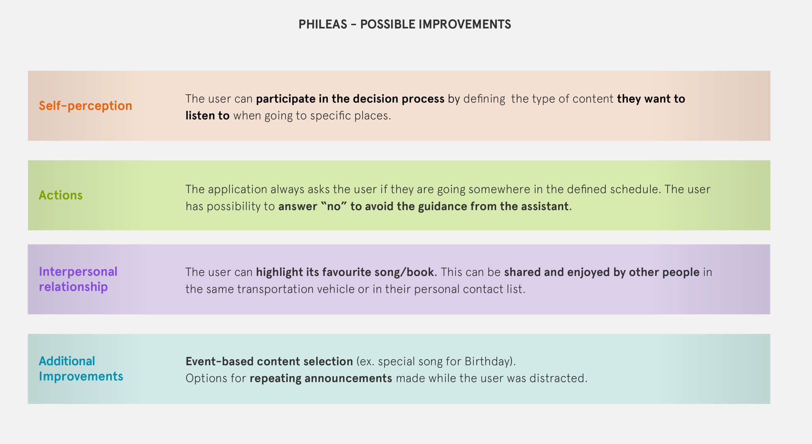
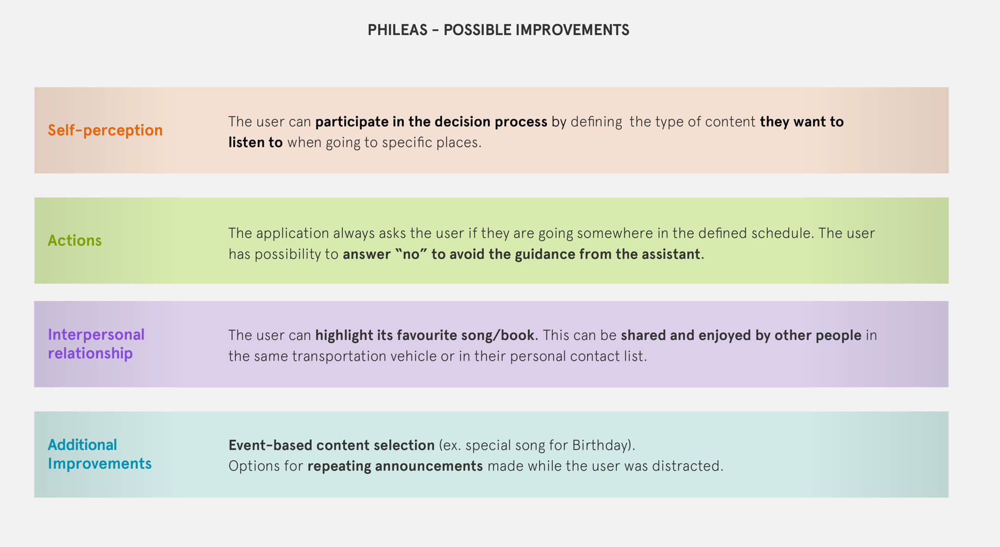

Phyleas
We had to ideate an innovative service to give more meaning to the transportation experience in public transports. After research and analysis on commuters, we thought about a mobile application that has the role of a companion and gives instructions to commuters through earphones.
The application provides the right information at the right moment by telling the user about delays, cancellations, and walking time. During the time the user spends on public transportation, it will also suggest and play for him some audiobooks or music for the estimated while.
The application will self learn the user’s habits having access to his GPS location, calendar, transportation timetables, and personal taste of music and audiobook in order to suggest to the user when he should leave home and how he can productively spend time on the public transportation. We created a storyboard, an action diagram, a system map, and a business model canvas to describe the service.
After the course, I decided to continue the project. I designed my vision of the mobile application through maps, interaction study, wireframes, style, UX, and UI.

User Information Flow
Me and my teamates analyzed different type of user informations. In the schema below, we were able to translate user sources into different design opportunities. In this way we could continue in the framing of the service through maps, for example the system map, very userful to understand information, material and financial flow.
System map

Consequences and possible improvements
In this part of the project we tought about the consequences of our service in terms of Self-perception, Actions and interpersonal relationship.Our critical theme was the automation of actions and services through the use of data.
After the exploration of the consequences we though about possible improvements.
 

Wireframes
Final User Interface

Course of User Experience Design
Concept: November 2018 - December 2018 with: Azzolin, Hoogen, Shahriari, Xu,
Zheng.
App prototype, wireframes and graphics: June 2020 designed by myself.